Ein strukturierter Datensatz, der den eigenen Bedürfnissen entspricht, ist recht selten anzutreffen. Daher ist die Transformation der Daten in die gewünschte Form unvermeidbar. Mit OpenRefine lassen sich die Daten dennoch bändigen. Die Herangehensweise erkläre ich wie immer anhand meines manipulierten Datensatzes, der hier heruntergeladen werden kann. Ich werde den Datensatz, der Informationen über die Mitglieder des Bundestages (MdB) enthält, etwas umgestalten.
So sieht mein Plan aus – ich will die Informationen aus der Spalte Name, Vorname zergliedern. Genau genommen beabsichtige ich den Namen, Vornamen und Partei jedes Abgeordneten in eine separate Spalte überführen.
Nachdem ich die Daten importiert habe, wähle ich das Dropdown Menü der spalte Name, Vorname aus. Dabei fahre ich mit der Maus über den Menüpunkt Edit column und wähle im rechten Seitenmenü die Option Split into several columns aus.
Ein neues Menüfenster öffnet sich. Hier muss ich definieren wie OpenRefine die Datenzeile zergliedern soll. Ich kann hier zwischen zwei Optionen wählen – by separater und by field lenghts. Wer sich den Datensatz und insbesondere die Spalte Name, Vorname angeguckt hat, dem ist vielleicht aufgefallen, dass die einzelnen Informationsbrocken Name, Vorname und Partei durch ein Komma getrennt sind. Dieses gemeinsame Merkmal, das über alle Datenzeilen hinweg existiert, will ich mir zunutze machen. Daher wähle ich die Option by separater aus. Wenn ein ein anderes Zeichen die Informationen trennt, muss man in der Zeile unterhalb das entsprechende Zeichen anpassen. Da ich die spalte Name, Vorname nach der Transformation nicht löschen will, entferne ich auf der rechten Seite das Häkchen Remove this column. OK klicken.
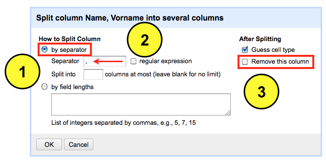
Drei neue Spalten sind das Ergebnis der Transformation. Jetzt passe ich noch den Namen der Spalte an. Dazu fahre ich mit der Maus über das Dropdown Menü Name, Vorname zum Menüpunkt edit column und wähle dort die Option rename this column aus.
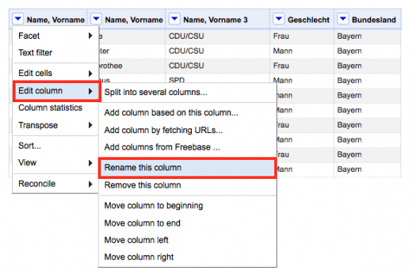
Hier editiere ich den Namen und bestätige die Eingabe mit OK. Die anderen zwei spalten werden ebenso angepasst.
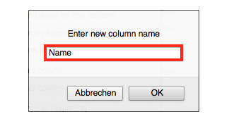
Im Rahmen der Datenbereinigung kommt man um die Suchen und Ersetzen Funktion nicht herum. Die Herangehensweise erkläre ich wie immer anhand meines manipulierten Datensatzes, der hier heruntergeladen werden kann. Dabei werde ich ein Element innerhalb des Datensatzes, der Informationen über die Mitglieder des Bundestages (MdB) enthält, modifizieren bzw. korrigieren. Dazu nutze ich wieder OpenRefine.
In der Spalte Name, Vorname ist neben dem Namen und Vornamen auch die Parteizugehörigkeit aufgeführt. Hier habe ich einen kleinen Fehler eingebaut. Die Parteikennung “DIE LINKE.” ist durch einen Punkt am Ende verunreinigt. Diesen will ich entfernen bzw. durch die korrekte Ausprägung “DIE LINKE” ersetzen. Dazu wähle ich das Drop Down Menü der Spalte aus und bewege die Maus über den Menüpunkt Edit cells und wähle dann anschließend die Funktion Transform aus.
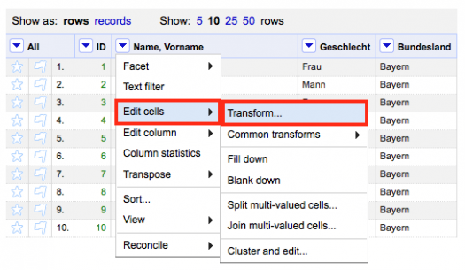
Eine Eingabemaske öffnet sich. Folgende Syntax gebe ich jetzt in die Konsole ein value.replace(“DIE LINKE.”, “DIE LINKE). Mit dem Befehl wird OpenRefine angewiesen die Spalte “Name, Vorname” nach der Ausprägung “DIE LINKE.” zu durchsuchen und diese durch die neue Bezeichnung “DIE LINKE” zu ersetzen. Im Preview Fenster ist die erfolgreiche Transformation in Zeile 7 bereits sichtbar. Ich bestätige die Eingabe durch OK und schließe damit die Transformation ab.
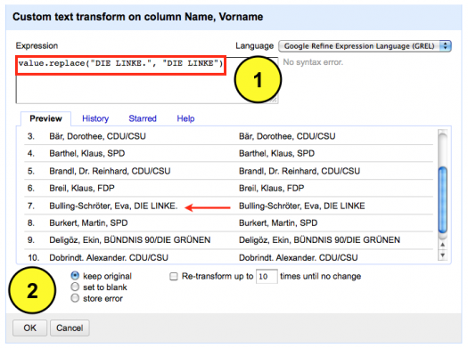
Wo muss man viel Zeit, Geduld und Einfallsreichtum investieren? Jep, in die Datenbereinigung. Die meisten Datensätze bleiben in der Regel Rohdiamanten, obwohl mehr rauszuholen wäre. Das nachfolgende Tutorial dient als Motivationsgrundlage.
Das Problem: Wie lassen sich die Geldbeträge aus der Spalte “Delikt” in separate Spalten überführen? In OpenRefine lässt sich das wie folgt realisieren:
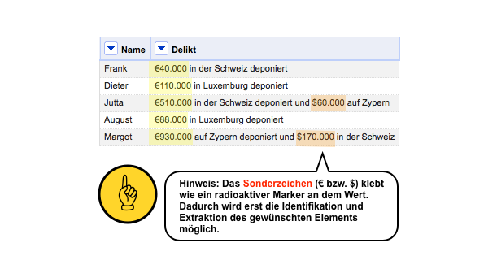
Die einzelnen Schritte: Ich werde zunächst eine neue Spalte anlegen. Dazu wähle ich aus dem Dropdown Menü der Spalte “Delikt” die Option Edit column und den Befehl Add column based on this column aus.
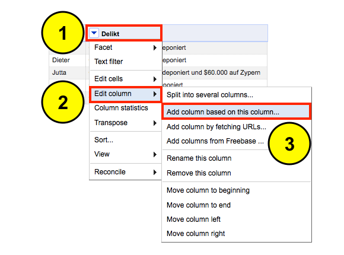
Eine neue Eingabemaske öffnet sich. Dort definieren wir zuerst den neuen Spaltennamen “Euro”. Anschließend wähle ich “Clojure” als Syntax Sprache aus. Danach geben wir folgende Syntax ein:
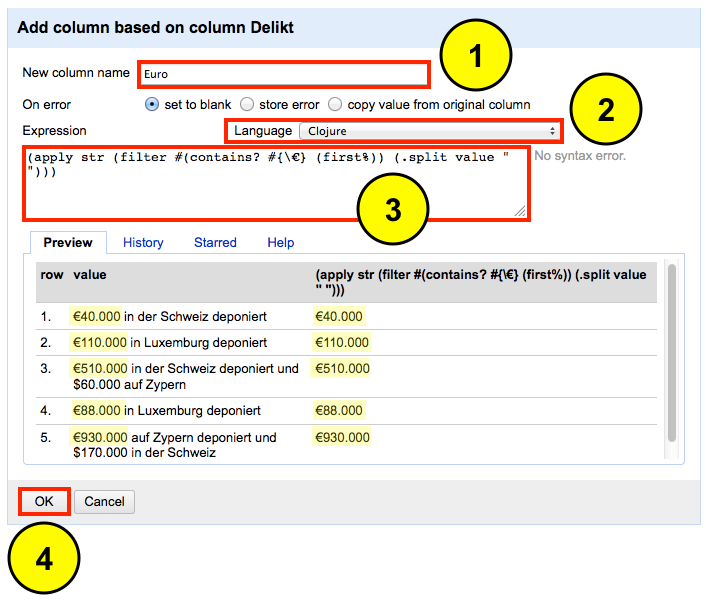
Was macht die Syntax? Der Code sucht in der Spalte “Delikt” nach Elementen, die das Sonderzeichen “€” tragen. Wenn ein passendes Element gefunden wird, kopiert OpenRefine dieses in die neue Spalte “Euro”.
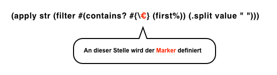
Das Ergebnis nach der ersten Transformation kann sich durchaus sehen lassen. Alle Elemente wurden erfolgreich identifiziert und isoliert.
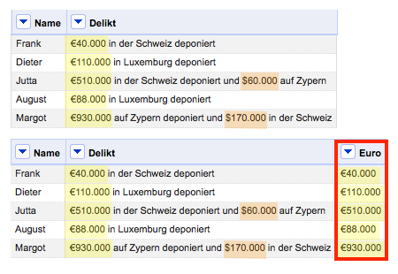
Der erste Schritt hat lediglich die Eurobeträge extrahiert. Nun sollen auch die Dollarbeträge isoliert werden. Dazu wiederholen wir die Schritte mit zwei kleinen Änderungen.
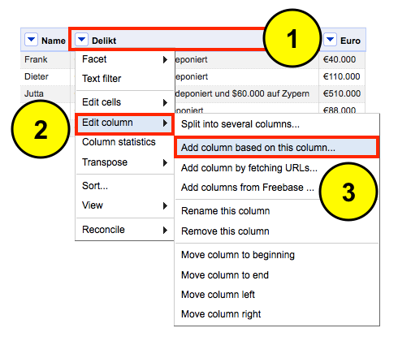
Die erste Änderung betrifft den Spaltennamen. Die neue Spalte heißt nun “US Dollar”. Die zweite Änderung bezieht sich auf die Syntax. Wir tauschen das “€” Zeichen durch “$” aus.
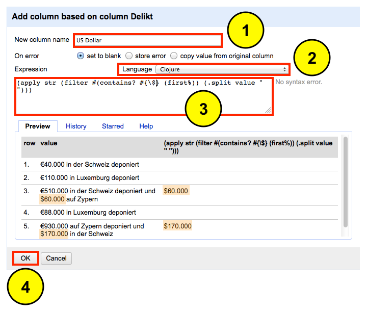
Nach der zweiten Datenextraktion hat der Datensatz an Wert gewonnen. Wir konnten Informationen, die vorher nur schwer zugänglich waren, gezielt isolieren und für weitere Analysen nutzbar machen.
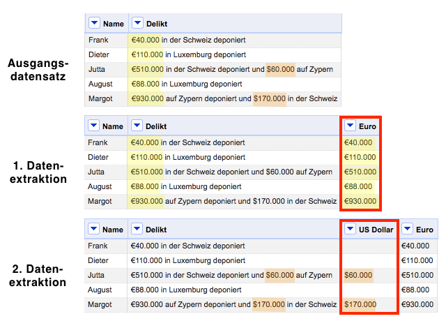
Der zweite Schritt soll nun die störenden Sonderzeichen “$“, “€“, “.” entfernen. Dazu wähle ich aus dem Dropdown Menü der Spalte “US Dollar” die Option Edit cells und den Befehl Transform aus.
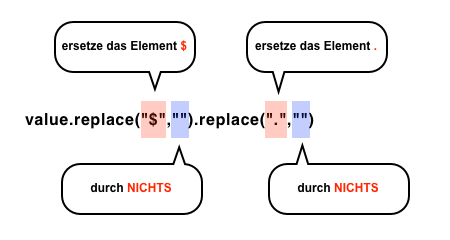
Was macht die syntax? Der Code durchsucht die Spalte “US Dollar” nach folgenden Elementen “$“, “.” und löscht diese. Die Funktion dürfte den meisten von uns unter den Namen “Suchen und Ersetzen” bekannt sein. In der Voransicht kann man das Ergebnis der Transformation betrachten. Die letzten Schritte wendet man auch auf die Spalte “Euro” an, um die Datenbereinigung vollständig abzuschließen.
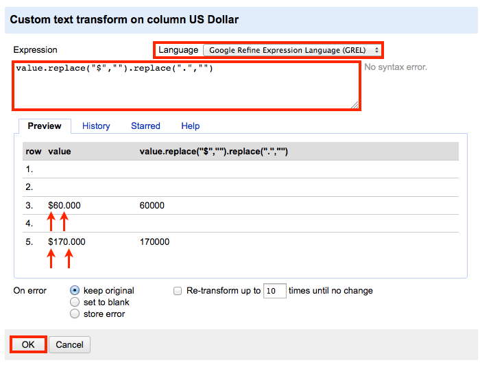
Zwei Transformationsschritte waren notwendig, um den Datensatz aufzuwerten. Mit den zwei Schritten konnten wir Daten nutzbar machen, die vorher nur schwer zugänglich waren.
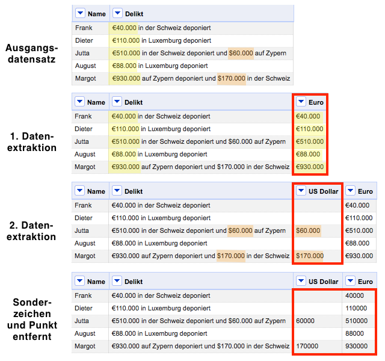
Bevor man mit einer Datenanalyse beginnt, sollte man den Datensatz bereinigen. Eine unterschätzte Fehlerquelle beim Umgang mit großen Datensätzen ist das "Doppelte Lottchen" - Datenzeilen mit identischen Inhalt. Insbesondere bei quantitativen Analysen können sie das Ergebnis der Auswertung verzerren. Daher ist es ratsam diese vorher zu identifizieren und gegebenenfalls zu entfernen. In OpenRefine lässt sich das wie folgt realisieren.
Das Beispiel: Mein Datensatz enthält drei Doppler – die Doppler weisen dabei Unterschiede in der Schreibweise (Groß- / Kleinschreibung) auf. Inhaltlich sind die Doppler jedoch identisch. Diese will ich nun entfernen. Dazu geh ich wie folgt vor:
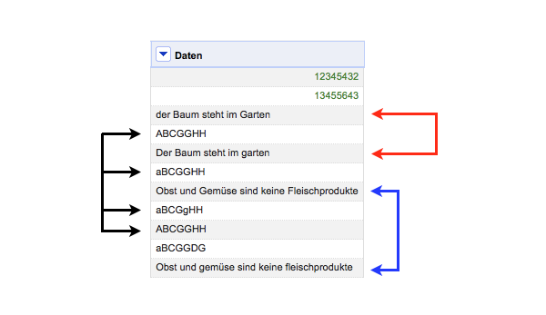
Die einzelnen schritte: Ich werde zunächst die Daten sortieren. Dazu wähle ich aus dem Dropdown Menü der Spalte “Daten” die Option Sort aus.
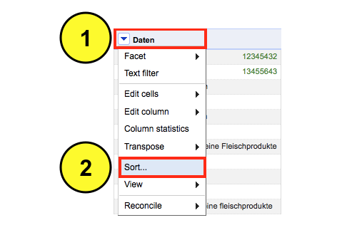
Eine neue Eingabemaske erscheint. Hier definiere ich den Sortiermodus für den Inhalt. Da der Datensatz überwiegend Textbausteine enthält, wähle ich die Option text aus. Wenn der Datensatz nur Zahlen enthalten würde, wäre die Option numbers geeigneter. Abschließend wähle ich die Reihenfolge der Sortierung a-z und bestätige meine Auswahl mit OK.
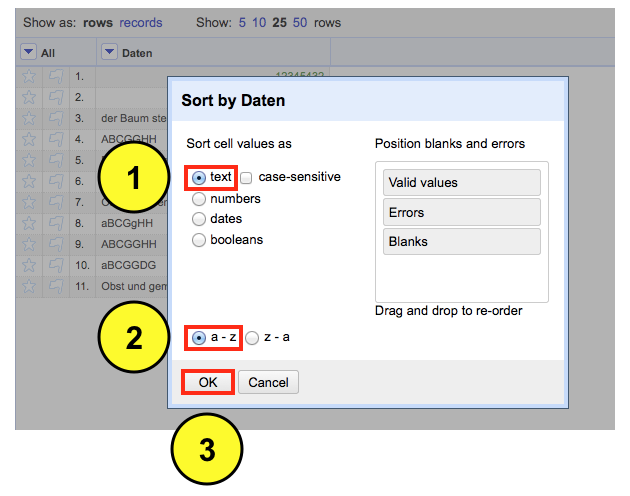
Nach der Transformation befinden sich die Doppler untereinander. Diese Reihenfolge übernehme ich und verwerfe somit die alte. Hierzu wähle ich aus dem Dropdown Menü die Option Sort und anschließend die Auswahl Reorder rows permanently aus.
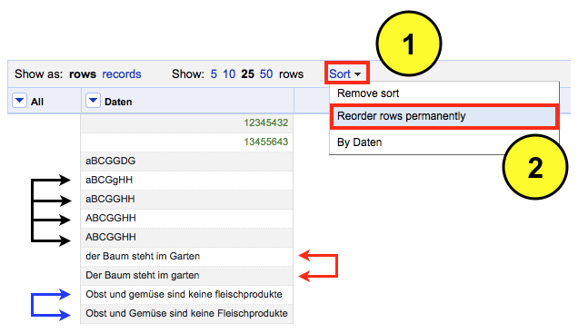
Im nächsten Schritt werde ich ich die Datenzeilen mit identischen Inhalt leeren. Dazu wähle ich aus dem Dropdown Menü der Spalte “Daten” die Option Edit cells und dann die Funktion Blank down aus.
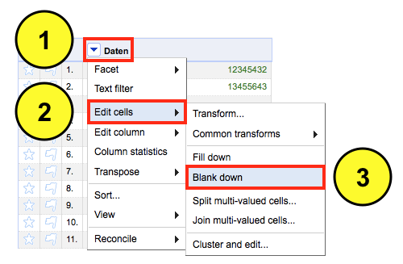
Das Ergebnis ist mehr als unbefriedigend. Lediglich ein Doppler wurde erfolgreich entfernt. Offenbar genügt bereits eine Abweichung in der Schreibweise (Groß- / Kleinschreibung), um die Erkennung von Dopplern zunichte zu machen. Aus semiotischer Sicht mag das korrekt sein – aus semantischer Sicht allerdings unbrauchbar. Somit muss ich nun tricksen, um das gewünschte Ergebnis zu erhalten.
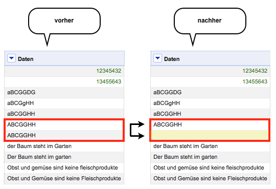
Ich klicke in der Menüleiste auf “Undo/Redo“, um meine letzte Transformation rückgängig zu machen. Dafür wähle ich aus dem Log die Auswahl Reorder rows.
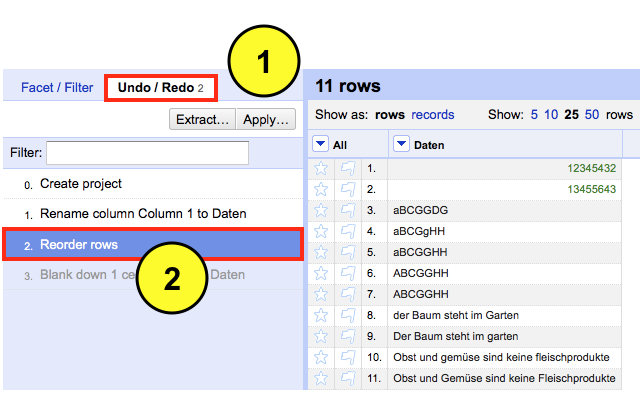
Danach wähle ich aus dem Dropdown Menü der Spalte “Daten” die Option Edit cells, Common transforms und anschließend die Option To uppercase aus. Der Befehl transformiert den gesamten Inhalt aller Zellen in Großbuchstaben. Inhaltlich gehen dabei keine Informationen verloren.
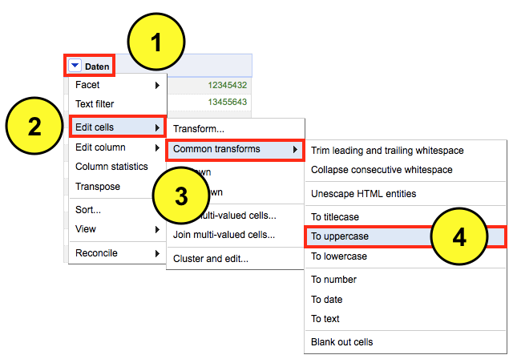
Das Ergebnis der Transformation sieht nun so aus.

Nun werde ich erneut die Zeilen mit den identischen Einträgen leeren. Dazu wähle ich aus dem Dropdown Menü der Spalte “Daten” die Option Edit cells und anschließend den Befehl Blank down aus.
Das Ergebnis der neuen Transformation kann sich sehen lassen. Die Doppler wurden entfernt. Dafür verunreinigen nun mehrere leere Datenzeilen meinen Datensatz.
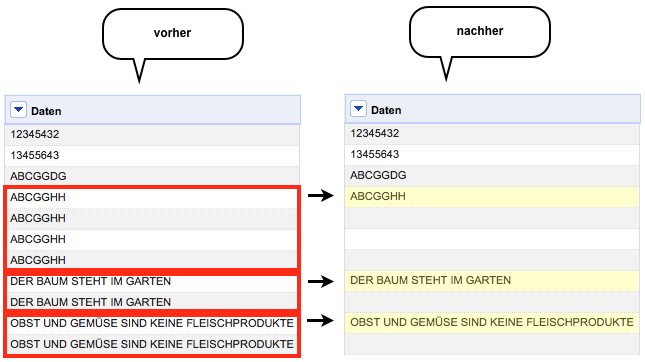
Diese werde ich im nächsten Schritt gezielt entfernen. Hierfür wähle ich aus dem Dropdown Menü der Spalte “Daten” die Option Facet, Customized facets und dann den Befehl Facet by blank aus.
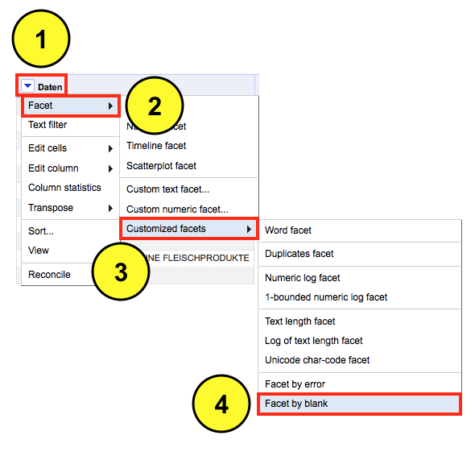
In der linken Menüleiste sehe ich das Ergebnis der Prozedur. Es wurden fünf leere Datenzeilen gefunden. Durch klicken auf true aktiviere ich diese Auswahl, die ich jetzt gezielt in der Datenansicht betrachten kann.
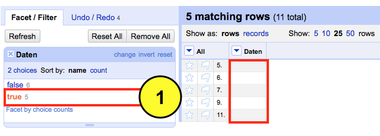
Und so löscht man die leeren Datenzeilen – hierzu wähle ich aus dem Dropdown Menü der Spalte “All” die Option Edit rows und dann die Funktion Remove all matching rows aus. Somit werden die aktiven Datenzeilen gezielt aus dem Datensatz entfernt.
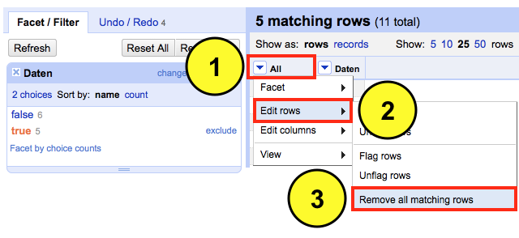
Das finale Ergebnis der Datenbereinigung sieht nun so aus. Keine Doppler oder leere Datenzeilen.
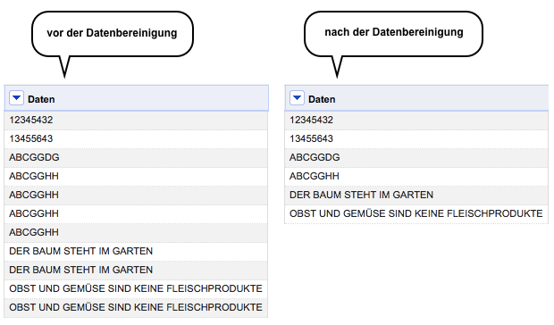
Vergangene Woche hat Zeit Online die Content API (beta) von der Datenleine gelassen. Um in den Datenpalast zu gelangen, muss man sich zunächst einen API-Key besorgen. Mit dem API-Key kann man entweder direkt über den API-Explorer die Daten durchforsten oder man greift auf OpenRefine zurück.
Nachdem man OpenRefine gestartet hat, legt man ein neues Projekt an. Dabei wählt man die Option “Web Addresses (URLs)” aus. Anschließend muss man die URL bzw. den sog. HTTP Request definieren. Aus der nachfolgenden Illustration lässt sich die Zusammensetzung der Suchanfrage ableiten.
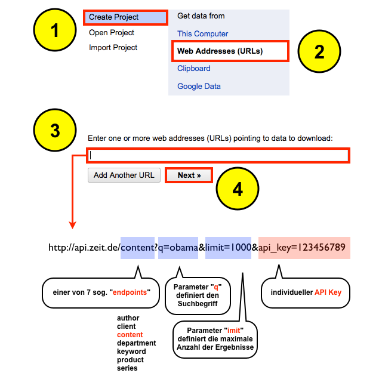
Die ZEIT Online API Dokumentation beschreibt kurz und bündig die Möglichkeiten der API. Das Resultat der Abfrage wird im JSON Format ausgeliefert. In der Preview Ansicht kann man entweder alle Informationen übernehmen oder nur Teilfragmente (Title, URI, Supertitle … etc.).
Um eine Datenspalte in OpenRefine zu duplizieren, gehe ich wie folgt vor. Ich importiere zunächst einen beliebigen Datensatz in OpenRefine. Ich entscheide mich für einen zweispaltigen Datensatz mit sechs Datenzeilen rund um das Thema Obst und Gemüse.
Die Spalte “Gemüse” werde ich jetzt klonen. Warum? Ich will beim Herumdoktern mit dem Datensatz keinen Datenverlust oder eine Verunreinigung der Originalspalte riskieren. Dazu wähle ich im Dropdown Menü der Spalte “Gemüse” zunächst die Option Edit column und anschließend die Auswahl Add column based on this column aus.
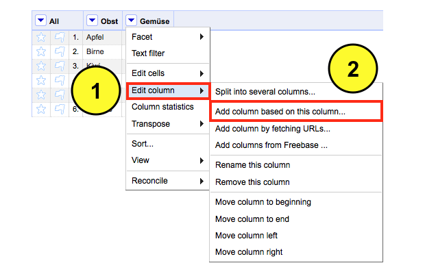
Ein neues Eingabefenster öffnet sich. Hier definiere ich nun den Namen der neuen Spalte “Neue Gemüse Spalte“. Anschließend nutze ich den GREL-Befehl cells["Gemüse"].value.
Um die Spalte “Gemüse” zu klonen. Im Vorschaufenster kann man das Ergebnis überprüfen.
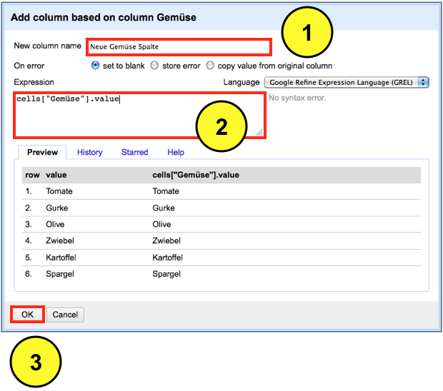
Alternativ kann man auch den Befehl value verwenden, um die Spalte zu klonen.